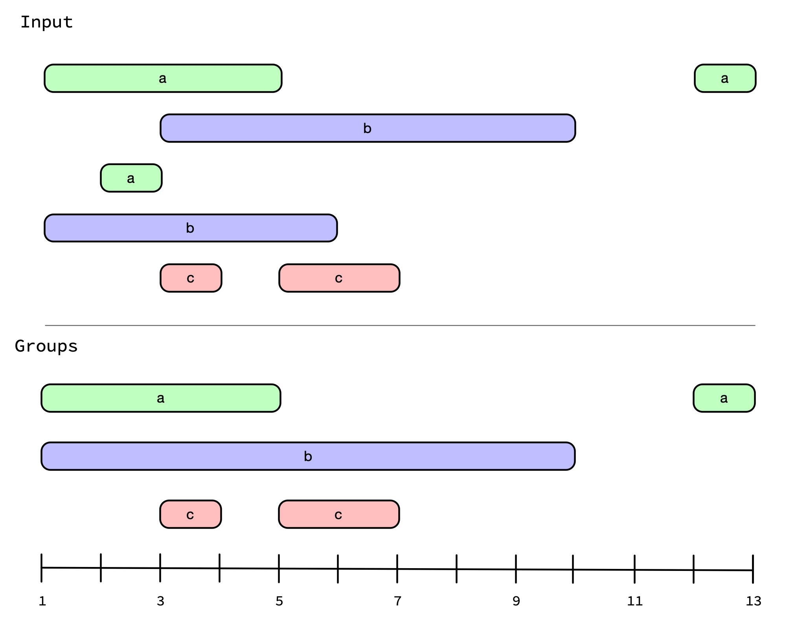
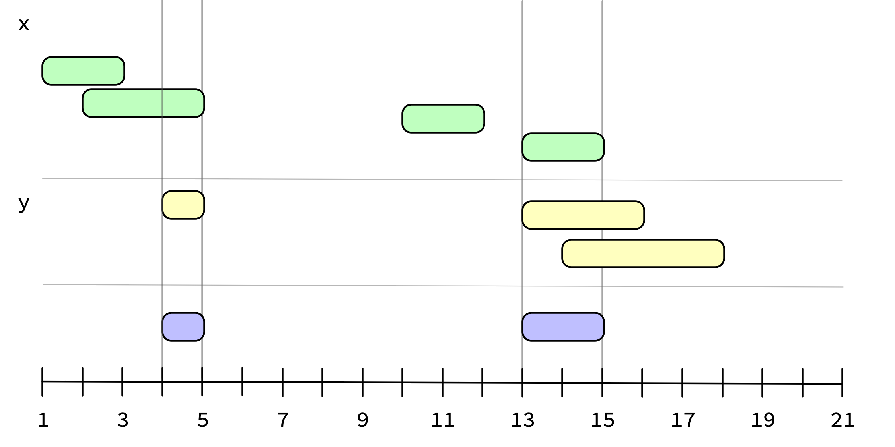
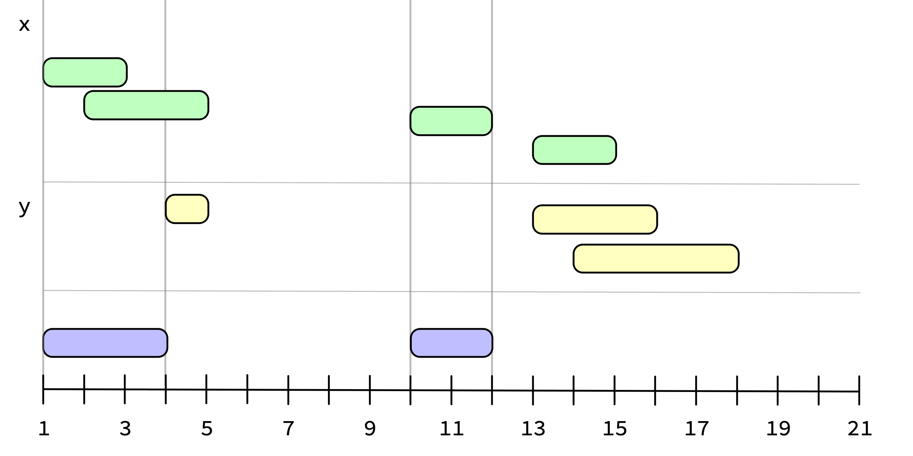

I’m very excited to announce the first release of ivs (said, “eye-vees”), a package dedicated to working with intervals.
It introduces a new vector type, the interval vector, which is generally just referred to as an iv throughout the package.
You can install ivs from CRAN with:
install.packages("ivs")
ivs is loaded with tools for working with interval vectors.
In particular, it provides utilities for:
- Grouping / Merging overlapping intervals.
- Splitting intervals on overlapping endpoints.
- Determining how two ivs are related, i.e. does one interval precede, follow, or overlap another?
- Applying set theoretical operations like intersection, union, and complement on two ivs.
The rest of this blog post will explore some of this functionality through a number of practical examples.
library(ivs)
library(clock)
library(dplyr)
Creating an interval vector
Interval vectors are typically created from two parallel vectors representing the starts (inclusive) and ends (exclusive) of the intervals:
starts <- c(1, 5, 10, 3)
ends <- c(6, 9, 12, 4)
iv(starts, ends)
## <iv<double>[4]>
## [1] [1, 6) [5, 9) [10, 12) [3, 4)
ivs is designed to play nicely with the tidyverse, and most of the time start and end will already be columns in an existing data frame.
ivs is also designed to be generic.
It is built on top of vctrs, which gives it the ability to use any comparable type as the start/end vectors.
This includes dates and date-times:
starts <- as.Date("2019-01-01") + 0:2
ends <- starts + c(2, 5, 10)
iv(starts, ends)
## <iv<date>[3]>
## [1] [2019-01-01, 2019-01-03) [2019-01-02, 2019-01-07) [2019-01-03, 2019-01-13)
the integer64 type from bit64:
start <- bit64::as.integer64("900000000000")
end <- start + 1234
iv(start, end)
## <iv<integer64>[1]>
## [1] [900000000000, 900000001234)
or the year_month_day type from clock:
start <- year_month_day(c(2019, 2020), c(1, 3))
end <- year_month_day(c(2020, 2020), c(2, 6))
iv(start, end)
## <iv<year_month_day<month>>[2]>
## [1] [2019-01, 2020-02) [2020-03, 2020-06)
Interval vectors are always composed of right-open intervals, and each individual interval in the vector must satisfy start < end.
I say more on the practical reasons for this in the Getting Started vignette if you are interested in learning more.
Grouping by overlaps
One of the key features of ivs is that it makes identifying and merging overlaps as easy as possible.
Imagine you work for AWS (Amazon Web Services) and you have a database that tracks costs racked up by users that are utilizing your services.
The date ranges below represent the intervals over which the cost was accrued, and the intervals don’t overlap for a given (user, service) pair.
costs <- tribble(
~user, ~service, ~from, ~to, ~cost,
1L, "a", "2019-01-01", "2019-01-05", 200.5,
1L, "a", "2019-01-12", "2019-01-13", 15.6,
1L, "b", "2019-01-03", "2019-01-10", 500.3,
2L, "a", "2019-01-02", "2019-01-03", 25.6,
2L, "b", "2019-01-01", "2019-01-06", 217.3,
2L, "c", "2019-01-03", "2019-01-04", 30,
2L, "c", "2019-01-05", "2019-01-07", 66.2
) %>%
mutate(
from = as.Date(from),
to = as.Date(to)
)
costs
## # A tibble: 7 × 5
## user service from to cost
## <int> <chr> <date> <date> <dbl>
## 1 1 a 2019-01-01 2019-01-05 200.
## 2 1 a 2019-01-12 2019-01-13 15.6
## 3 1 b 2019-01-03 2019-01-10 500.
## 4 2 a 2019-01-02 2019-01-03 25.6
## 5 2 b 2019-01-01 2019-01-06 217.
## 6 2 c 2019-01-03 2019-01-04 30
## 7 2 c 2019-01-05 2019-01-07 66.2
You might be interested in identifying the contiguous blocks of time that a particular service was in use, regardless of who was using it.
In graphical form, that might look like this (notice how the overlapping a and overlapping b intervals have been combined):

To solve this problem, we will first convert our from/to dates into a true interval vector using iv().
costs <- costs %>%
mutate(
interval = iv(from, to),
.keep = "unused"
)
costs
## # A tibble: 7 × 4
## user service cost interval
## <int> <chr> <dbl> <iv<date>>
## 1 1 a 200. [2019-01-01, 2019-01-05)
## 2 1 a 15.6 [2019-01-12, 2019-01-13)
## 3 1 b 500. [2019-01-03, 2019-01-10)
## 4 2 a 25.6 [2019-01-02, 2019-01-03)
## 5 2 b 217. [2019-01-01, 2019-01-06)
## 6 2 c 30 [2019-01-03, 2019-01-04)
## 7 2 c 66.2 [2019-01-05, 2019-01-07)
Next, we’ll use iv_groups() on the interval column to merge together all of the overlapping intervals.
It returns the intervals that remain after all of the overlaps have been merged.
Since we want to do this on a per-service basis, we’ll group by service.
services <- costs %>%
group_by(service) %>%
summarise(interval = iv_groups(interval), .groups = "keep")
# Note how this merged the two overlapping `service == "b"` intervals
# of [2019-01-03, 2019-01-10) and [2019-01-01, 2019-01-06) into one
# wider interval of [2019-01-01, 2019-01-10)
services
## # A tibble: 5 × 2
## # Groups: service [3]
## service interval
## <chr> <iv<date>>
## 1 a [2019-01-01, 2019-01-05)
## 2 a [2019-01-12, 2019-01-13)
## 3 b [2019-01-01, 2019-01-10)
## 4 c [2019-01-03, 2019-01-04)
## 5 c [2019-01-05, 2019-01-07)
Note that we used summarise() here rather than mutate().
iv_groups() will return a new interval vector that is shorter than the original input, so we can’t use mutate().
Instead, we are taking advantage of the relatively new feature of summarise() which allows you to return a per-group result with length >1.
You also might be interested in the intervals corresponding to when a service wasn’t being used.
I’m getting ahead of myself a little bit, but you could use one of the set operation functions, iv_complement(), for this.
We’ll provide (optional) lower and upper bounds for the universe over which to take the complement.
lower <- as.Date("2019-01-01")
upper <- as.Date("2019-01-15")
services %>%
summarise(
not_in_use = iv_complement(interval, lower = lower, upper = upper),
.groups = "drop"
)
## # A tibble: 6 × 2
## service not_in_use
## <chr> <iv<date>>
## 1 a [2019-01-05, 2019-01-12)
## 2 a [2019-01-13, 2019-01-15)
## 3 b [2019-01-10, 2019-01-15)
## 4 c [2019-01-01, 2019-01-03)
## 5 c [2019-01-04, 2019-01-05)
## 6 c [2019-01-07, 2019-01-15)
Let’s go back to costs and answer one more question.
Let’s say you don’t care about service anymore, and you just want to aggregate the costs over any contiguous date range for a particular user.
For example, user 1 used service a and b simultaneously, so you’d like to combine those costs into a single larger interval.
We can try to use iv_groups() here, but this isn’t quite what we need because it doesn’t give us a chance to aggregate the costs:
costs %>%
group_by(user) %>%
summarise(interval = iv_groups(interval), .groups = "drop")
## # A tibble: 3 × 2
## user interval
## <int> <iv<date>>
## 1 1 [2019-01-01, 2019-01-10)
## 2 1 [2019-01-12, 2019-01-13)
## 3 2 [2019-01-01, 2019-01-07)
Instead, we’ll use iv_identify_group().
This returns a new interval vector that has the same length as the old one, and identifies which of the 3 groups returned above that the original interval falls in.
users <- costs %>%
select(-service) %>%
group_by(user) %>%
mutate(user_interval = iv_identify_group(interval))
users
## # A tibble: 7 × 4
## # Groups: user [2]
## user cost interval user_interval
## <int> <dbl> <iv<date>> <iv<date>>
## 1 1 200. [2019-01-01, 2019-01-05) [2019-01-01, 2019-01-10)
## 2 1 15.6 [2019-01-12, 2019-01-13) [2019-01-12, 2019-01-13)
## 3 1 500. [2019-01-03, 2019-01-10) [2019-01-01, 2019-01-10)
## 4 2 25.6 [2019-01-02, 2019-01-03) [2019-01-01, 2019-01-07)
## 5 2 217. [2019-01-01, 2019-01-06) [2019-01-01, 2019-01-07)
## 6 2 30 [2019-01-03, 2019-01-04) [2019-01-01, 2019-01-07)
## 7 2 66.2 [2019-01-05, 2019-01-07) [2019-01-01, 2019-01-07)
This gives us something we can group on so we can sum() up the costs:
users %>%
group_by(user, user_interval) %>%
summarise(cost = sum(cost), .groups = "drop")
## # A tibble: 3 × 3
## user user_interval cost
## <int> <iv<date>> <dbl>
## 1 1 [2019-01-01, 2019-01-10) 701.
## 2 1 [2019-01-12, 2019-01-13) 15.6
## 3 2 [2019-01-01, 2019-01-07) 339.
Locating overlaps
While iv_groups() is useful for working with overlaps in a single interval vector, you might also find yourself in a situation where you need to identify relationships between multiple vectors.
This might be between two interval vectors (where you are detecting if one overlaps another in some way) or between a regular vector and an interval vector (where you want to know if the elements of the vector lie between any of the intervals).
For example, you might want to locate where these two interval vectors overlap:
# iv_pairs() is a useful way to create small ivs from individual intervals
needles <- iv_pairs(c(1, 5), c(3, 7), c(10, 12))
needles
## <iv<double>[3]>
## [1] [1, 5) [3, 7) [10, 12)
haystack <- iv_pairs(c(1, 6), c(12, 13), c(1, 2), c(7, 8), c(4, 5))
haystack
## <iv<double>[5]>
## [1] [1, 6) [12, 13) [1, 2) [7, 8) [4, 5)
Ideally you’d like to be notified of the fact that [1, 5) from needles overlaps with [1, 6), [1, 2) and [4, 5) from haystack.
iv_locate_overlaps() allows you to do exactly this, and returns a data frame of the locations where the two interval vectors overlap.
locations <- iv_locate_overlaps(needles, haystack)
locations
## needles haystack
## 1 1 1
## 2 1 3
## 3 1 5
## 4 2 1
## 5 2 5
## 6 3 NA
You can hand this data frame off to iv_align(), along with the original inputs, and it will join them together based on their overlapping locations:
iv_align(needles, haystack, locations = locations)
## needles haystack
## 1 [1, 5) [1, 6)
## 2 [1, 5) [1, 2)
## 3 [1, 5) [4, 5)
## 4 [3, 7) [1, 6)
## 5 [3, 7) [4, 5)
## 6 [10, 12) [NA, NA)
You’ll notice that [10, 12) from needles didn’t overlap with anything from haystack, so it was aligned with a missing interval.
iv_locate_overlaps() has a number of options to tweak the type of overlap you are looking for.
For example, you can change the type from its default value of "any" overlap to instead restrict it to cases where needles is "within" the haystack intervals, or to cases where it "contains" them.
You can also change what happens when there is no_match, like with [10, 12) from above.
If you don’t want to see unmatched needles in the result, you can "drop" them:
locations <- iv_locate_overlaps(needles, haystack, no_match = "drop")
iv_align(needles, haystack, locations = locations)
## needles haystack
## 1 [1, 5) [1, 6)
## 2 [1, 5) [1, 2)
## 3 [1, 5) [4, 5)
## 4 [3, 7) [1, 6)
## 5 [3, 7) [4, 5)
Other related functionality includes:
iv_locate_precedes() and iv_locate_follows() to determine where one iv precedes or follows another.iv_locate_between() to determine if elements of a vector fall between the intervals in an iv.iv_overlaps() which works like iv_locate_overlaps() but just returns a logical vector detecting if there were any overlapping intervals at all.
Counting overlaps
Sometimes you just need the counts of the number of overlaps rather than the actual locations of them.
For example, say your business has a subscription service and you’d like to compute a rolling monthly count of the total number of currently active subscriptions (i.e. in January 2019, how many subscriptions were active?).
Customers are only allowed to have one subscription active at once, but they may cancel it and reactivate it at any time.
If a customer was active at any point during the month, then they are counted in that month.
enrollments <- tribble(
~name, ~start, ~end,
"Amy", "1, Jan, 2017", "30, Jul, 2018",
"Franklin", "1, Jan, 2017", "19, Feb, 2017",
"Franklin", "5, Jun, 2017", "4, Feb, 2018",
"Franklin", "21, Oct, 2018", "9, Mar, 2019",
"Samir", "1, Jan, 2017", "4, Feb, 2017",
"Samir", "5, Apr, 2017", "12, Jun, 2018"
)
# Parse these into "day" precision year-month-day objects
enrollments <- enrollments %>%
mutate(
start = year_month_day_parse(start, format = "%d, %b, %Y"),
end = year_month_day_parse(end, format = "%d, %b, %Y"),
)
enrollments
## # A tibble: 6 × 3
## name start end
## <chr> <ymd<day>> <ymd<day>>
## 1 Amy 2017-01-01 2018-07-30
## 2 Franklin 2017-01-01 2017-02-19
## 3 Franklin 2017-06-05 2018-02-04
## 4 Franklin 2018-10-21 2019-03-09
## 5 Samir 2017-01-01 2017-02-04
## 6 Samir 2017-04-05 2018-06-12
Even though we have day precision information, we only actually need month precision intervals to answer this question.
We’ll use calendar_narrow() from clock to convert our "day" precision dates to "month" precision ones to reflect this.
We’ll also add 1 month to the end intervals to reflect the fact that the end month is open (remember, ivs are half-open).
enrollments <- enrollments %>%
mutate(
start = calendar_narrow(start, "month"),
end = calendar_narrow(end, "month") + 1L
)
enrollments
## # A tibble: 6 × 3
## name start end
## <chr> <ymd<month>> <ymd<month>>
## 1 Amy 2017-01 2018-08
## 2 Franklin 2017-01 2017-03
## 3 Franklin 2017-06 2018-03
## 4 Franklin 2018-10 2019-04
## 5 Samir 2017-01 2017-03
## 6 Samir 2017-04 2018-07
enrollments <- enrollments %>%
mutate(active = iv(start, end), .keep = "unused")
enrollments
## # A tibble: 6 × 2
## name active
## <chr> <iv<ymd<month>>>
## 1 Amy [2017-01, 2018-08)
## 2 Franklin [2017-01, 2017-03)
## 3 Franklin [2017-06, 2018-03)
## 4 Franklin [2018-10, 2019-04)
## 5 Samir [2017-01, 2017-03)
## 6 Samir [2017-04, 2018-07)
To answer this question, we are going to need to create a sequential vector of months that span the entire range of intervals.
This starts at the smallest start and goes to the largest end.
Because the end is half-open, there won’t be any hits for that month, so we won’t include it.
bounds <- range(enrollments$active)
lower <- iv_start(bounds[[1]])
upper <- iv_end(bounds[[2]]) - 1L
months <- tibble(month = seq(lower, upper, by = 1))
months
## # A tibble: 27 × 1
## month
## <ymd<month>>
## 1 2017-01
## 2 2017-02
## 3 2017-03
## 4 2017-04
## 5 2017-05
## 6 2017-06
## 7 2017-07
## 8 2017-08
## 9 2017-09
## 10 2017-10
## # … with 17 more rows
To finish up, we need to add a column to months to represent the number of subscriptions that were active in that month.
To do this we can use iv_count_between(), which returns an integer vector corresponding to the number of times the i-th month fell between any of the intervals in the active subscription interval vector.
months <- months %>%
mutate(count = iv_count_between(month, enrollments$active))
months
## # A tibble: 27 × 2
## month count
## <ymd<month>> <int>
## 1 2017-01 3
## 2 2017-02 3
## 3 2017-03 1
## 4 2017-04 2
## 5 2017-05 2
## 6 2017-06 3
## 7 2017-07 3
## 8 2017-08 3
## 9 2017-09 3
## 10 2017-10 3
## # … with 17 more rows

Also available are iv_count_overlaps(), iv_count_precedes(), and iv_count_follows() for counting relationships between two ivs.
Set operations
There are a number of set theoretical operations that you can use on ivs.
These are:
iv_complement()iv_union()iv_intersect()iv_difference()iv_symmetric_difference()
iv_complement() works on a single iv, while all the others work on two ivs at a time.
The easiest way to think about these functions is to imagine iv_groups() being called on each of the inputs first (to reduce them down to their minimal form) before applying the operation.
iv_complement() computes the set complement of the intervals in a single iv.
x <- iv_pairs(c(1, 3), c(2, 5), c(10, 12), c(13, 15))
x
## <iv<double>[4]>
## [1] [1, 3) [2, 5) [10, 12) [13, 15)
iv_complement(x)
## <iv<double>[2]>
## [1] [5, 10) [12, 13)
By default, iv_complement() uses the smallest/largest values of its input as the bounds to compute the complement over, but, as we showed back in the iv_groups() section, you can supply bounds explicitly with lower and upper:
iv_complement(x, upper = 20)
## <iv<double>[3]>
## [1] [5, 10) [12, 13) [15, 20)
iv_union() takes the union of two ivs.
It answers the question, “Which intervals are in x or y?”
y <- iv_pairs(c(4, 5), c(13, 16), c(14, 18))
x
## <iv<double>[4]>
## [1] [1, 3) [2, 5) [10, 12) [13, 15)
y
## <iv<double>[3]>
## [1] [4, 5) [13, 16) [14, 18)
iv_union(x, y)
## <iv<double>[3]>
## [1] [1, 5) [10, 12) [13, 18)
iv_intersect() takes the intersection of two ivs.
It answers the question, “Which intervals are in x and y?”
iv_intersect(x, y)
## <iv<double>[2]>
## [1] [4, 5) [13, 15)

iv_difference() takes the asymmetrical difference of two ivs.
It answers the question, “Which intervals are in x but not y?”
iv_difference(x, y)
## <iv<double>[2]>
## [1] [1, 4) [10, 12)

Inspiration
ivs was inspired by quite a few places!
- IRanges is a Bioconductor package that served as the biggest inspiration for this package. It is mainly focused on integer intervals for use with genomics, and uses S4 in a way that unfortunately means that their interval objects can’t currently be used as columns in a tibble, but is otherwise a really impressive package.
- Maintaining Knowledge about Temporal Intervals is a paper by James Allen that a number of these functions are based on. It is also a great primer on integer algebra.
- data.table contains a function named
foverlaps() for detecting different types of overlaps. It was also inspired by IRanges::findOverlaps(). They also have support for non-equi joins, which can also accomplish some of this.